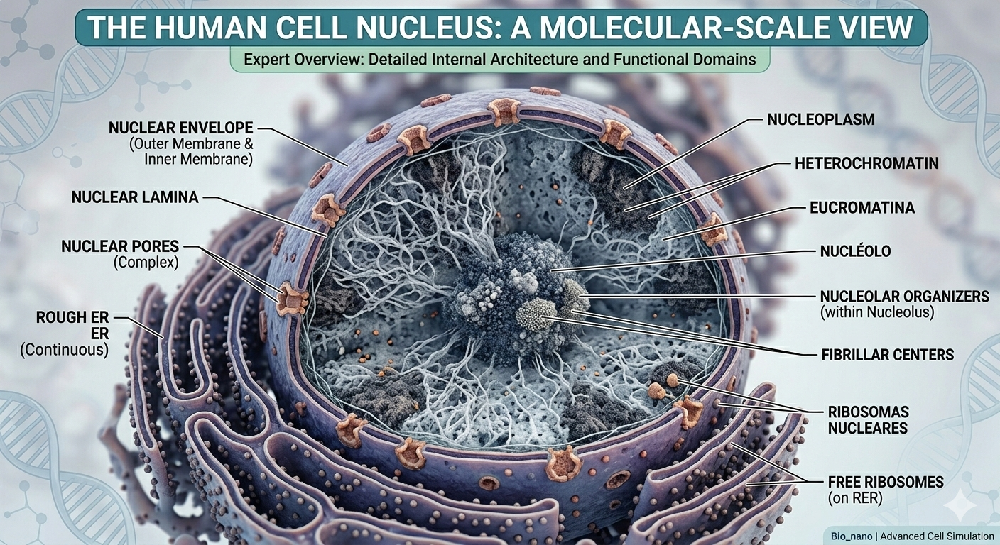

1. La Envoltura: Seguridad Perimetral
A diferencia de otros orgánulos, el núcleo posee una doble membrana. La externa es continua con el retículo endoplásmico, mientras que la interna está reforzada por la lámina nuclear, una red proteica que da soporte mecánico y organiza los cromosomas.
Concepto avanzado: El núcleo actúa como un sensor mecánico que puede activar genes específicos bajo presión física.
2. Poros Nucleares: Control de Tráfico
El Complejo del Poro Nuclear (NPC) es una de las estructuras más grandes de la célula. Regula el paso de macromoléculas mediante proteínas llamadas nucleoporinas.
- Importinas: Introducen proteínas con señales de localización nuclear (NLS).
- Exportinas: Sacan el ARNm maduro para su traducción.
3. El Nucleolo: El Reactor
No es una estructura física rígida, sino una región de alta actividad metabólica donde se sintetizan los ribosomas. Es el ejemplo perfecto de "auto-ensamblaje molecular".
